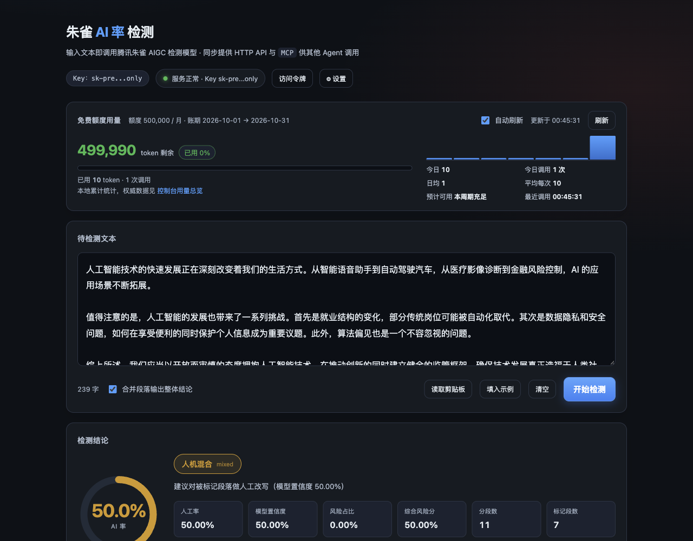
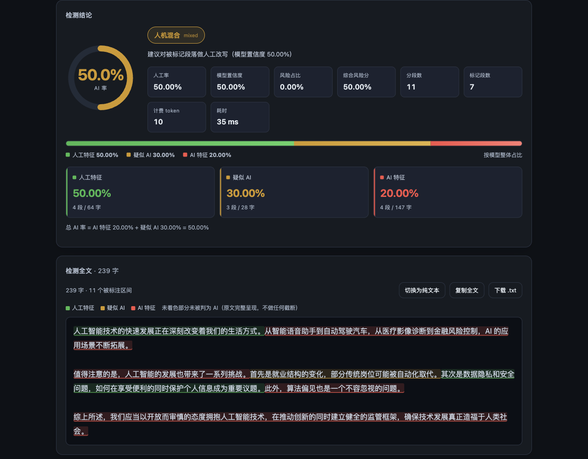

历史记录与导出
按关键词、结论或来源筛选，回看各轮检测，导出 JSON / CSV。
基于腾讯朱雀 AI 文本检测 · 开源 MCP 工具
连接 Codex、WorkBuddy 等 Agent，
把检测、定位、改写与复检，交给一次连续的工作流。
MCP 原生工具调用 · 本地历史对比 · 多账号 Key 池
帮我优化这篇文章的 AI 率，
保留原意，最多迭代 3 轮。
“综上所述，未来值得期待。”
根据原文证据补足具体结论，保留引用与论证。
LOCAL WEB APP
粘贴文本，一键检测。
分类占比、段落高亮、历史与用量，在同一个界面里。


按关键词、结论或来源筛选，回看各轮检测，导出 JSON / CSV。
在网页中管理 Key、所属账号、轮询状态、接口与本地用量校准。
你在网页中查看的检测与历史，也能被连接的 Agent 调用和比较。
上方为程序真实界面，使用本机假上游与合成 Key 演示；文本、分数和用量用于功能展示。静态官网不接收 Key，也不直接执行检测。下载并启动后，浏览器打开本机检测页面。
下载并打开本机网页 ↗AGENT FIRST
从手动复制结果，到 Agent 直接调用。
每次修改都有检测结果可比较。
腾讯朱雀给出 AI 率、人工特征、疑似 AI 与 AI 特征占比。Agent 留下首轮结果和原文。
工具返回段落全文和字符位置，Agent 根据文章语境处理被标记片段。
保留事实、观点、术语、引文和文体，减少空泛表达与重复句式。
改写后自动复检。达到目标、到达轮数或质量受影响时停止，保留较好的版本。
API ACCESS
官网体验适合单次查看，
API + MCP 适合连续处理与自动迭代。
朱雀官网在线体验
未登录 5 次/日，登录后 20 次/日。
人工粘贴、检测、复制结果。
本项目 · 腾讯朱雀 API + MCP
当前每账号免费额度，Agent 可在额度内连续调用。
添加不同账号的 Key，轮询可用项并自动切换。
用账号标识分组 Key。失效 Key 停用，额度耗尽的账号组冷却，其他可用账号接续。用量和历史留在本机。
额度依据：腾讯朱雀 API 文档与EdgeOne 官方额度说明。API 核对于 2026-10-07，登录后次数实测于 2026-10-08；真实扣减看 makers_models_usage.total_tokens，余额、共享范围与周期以控制台为准。
QUICK START
Node.js 22+，零第三方运行时依赖。
MCP 由客户端启动，网页无需保持运行。
下载对应平台，双击启动服务。在 EdgeOne 控制台创建 Key，填入本机网页的设置。
node src/cli.mjs install-mcp
--target codex在解压目录运行，复制输出的注册命令执行；随后检查 MCP 连接状态。
让 Agent 自动执行迭代，并带上你的目标、最多轮数和需要保留的内容。
完整接入与排查文档 ↗可直接复制给 Agent
请通过 zhuque-detect MCP 优化这篇文章的 AI 率。先用 detect_ai_text，is_merge=false，记录首轮 AI 率与历史 id；按被标记段落针对性改写，保持论点、事实、引文和文体，不编造资料。每轮改写后复检，最多 3 轮，目标低于 20%。若无改善或质量下降，保留较好版本并停止。最后给我正文与各轮记录。
MORE THAN A SCORE
把检测结果变成可使用的信号。
单篇、批量、历史、用量和服务信息。也可使用网页、HTTP API 与 CLI。
保存原文、分类与每轮结果，支持 JSON / CSV 导出，方便回看前后差异。
macOS / Windows 分别打包。迁移后重新生成 MCP 注册，含空格、中文路径均可处理。
GOOD TO KNOW
MCP 工具负责检测与记录，连接的 Codex、WorkBuddy 等 Agent 负责改写。你把迭代任务交给 Agent 后，它可以连续调用这些工具。程序自身不包含独立的生成模型。
没有固定次数。文本长度、分块、调用结果等影响消耗，实际扣减看官方返回的 Makers token。免费配额当前按账号共享，多建同账号 Key 不增加额度。
待检测原文发送到腾讯朱雀 API。Key 与历史保存在本机，不上传给此静态网站。程序没有遥测；本地历史默认保留全文，可关闭记录。Agent 处理文章还适用该客户端的数据规则。
可以使用支持 stdio MCP 的客户端。默认名单为 Codex、WorkBuddy，其他客户端需要在本机添加其名称。移动目录后重做注册；此服务没有远程 HTTP MCP 接口。
检测只是辅助信号。保持文本质量与原意，并设定最大轮数和停止条件。网站中的下降数字为流程示意，不能代表每篇文章的实际结果。
READY WHEN YOU ARE
Codex / WorkBuddy × MCP × 腾讯朱雀 AI 文本检测